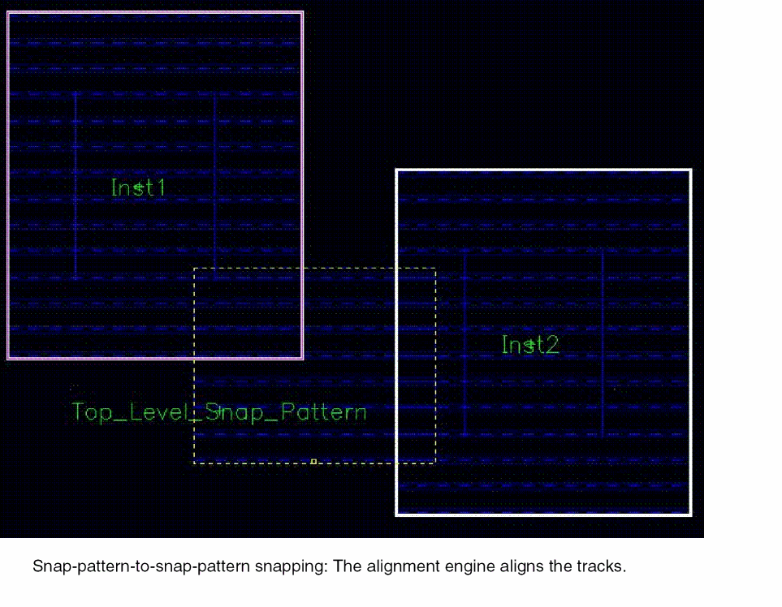
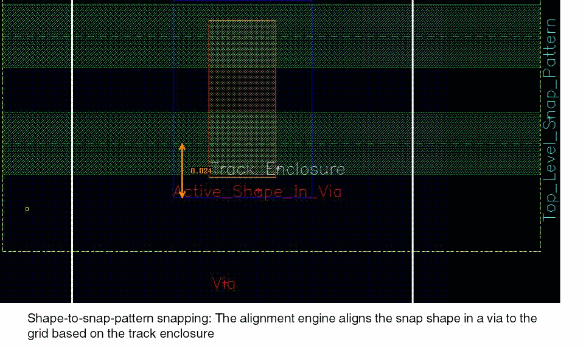

Object Placement Inside the Fin Boundary
The layout editor provides rapid placement of shapes, Pcells, instances, and vias in a fin boundary by using a shape snapping algorithm. This ensures a correct-by-construction layout on the fin grid. Automatic alignment is achieved by the alignment engine that contains the alignment semantics.
The layout editor commands used for creating and moving Pcells, instances, and vias in a layout make use of the alignment engine to ensure placement correctness. The alignment engine accepts a set of shapes and based on their overlaps with fin boundaries in the design, places them appropriately. The following are the automatic placement requirements and the classification of their results:
-
When a snap pattern shape or a Pcell, instance, via, or figGroup containing a snap pattern shape (the free figure) overlaps another snap pattern shape or a Pcell, instance, via, or figGroup containing a snap pattern shape (the fixed figures) on the same layer-purpose pair (LPP), then the alignment engine tries to align the snap pattern tracks. In this process, it determines the transformation that is applied to the free figure such that the closest tracks of the overlapping pair are aligned.
The following figure shows the result of snap pattern shape pair alignment. No modification of the Pcell code is necessary to enable snapping of Pcell instances to the fin grid since the snapping is done based on the existing fin boundary shape in the Pcell.
 -
A snap pattern definition specifies a list of LPPs, and shapes on these LPPs snap to the snap pattern grid. When a shape on such a layer, or a Pcell, instance, via, or figGroup containing a shape overlaps a matching snap pattern shape, then the engine computes the transformation required to place the shape as defined by the applicable track enclosure.
The following figure shows the result of shape-to-snap-pattern snapping for a via that contains this shape. No change to the via is needed to enable snapping of substrate contacts to the fin grid because snapping is done based on the existing shape on the Active layer in the via master.

When you select or drag a snap pattern shape, the shape behaves in the same way as any other shape in the layout editor. You can change the visibility and selectability of the snap pattern shapes using the Palette assistant.
Related Topics
Object Snapping to Local Snap Pattern Shapes
Return to top